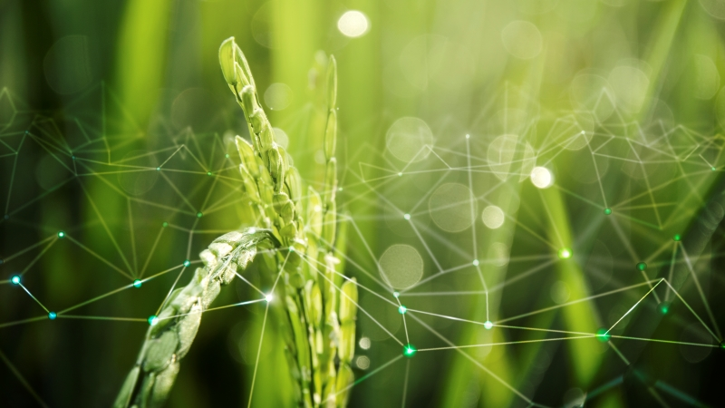

Os principais responsáveis pelo recente avanço tecnológico
 Image by rawpixelOs avanços tecnológicos na agricultura resultam da colaboração entre diversos agentes. Entre eles estão:
Empresas de Tecnologia Agrícola (AgTech):
John Deere:
Conhecida por suas máquinas agrícolas, a John Deere está inovando com tratores autônomos e tecnologia de precisão.
Bayer Crop Science:
Investe em biotecnologia, genética de plantas e soluções digitais para agricultura.
Corteva Agriscience:
Focada em soluções de sementes, proteção de cultivos e agricultura digital.
Startups e Inovadores:
Indigo Agriculture:
Trabalha com microbiomas de plantas para melhorar a produtividade e a sustentabilidade.
AeroFarms:
Líder em agricultura vertical, desenvolvendo tecnologias para cultivo em ambientes controlados.
Farmers Edge:
Oferece soluções de dados e análise para a agricultura de precisão.
Instituições de Pesquisa e Universidades:
Universidade da Califórnia, Davis (UC Davis):
Conduz pesquisas avançadas em biotecnologia agrícola, sustentabilidade e eficiência hídrica.
Instituto Internacional de Pesquisa sobre Arroz (IRRI):
Desenvolve variedades de arroz resistentes a pragas e mudanças climáticas.
EMBRAPA (Empresa Brasileira de Pesquisa Agropecuária):
Focada em inovação agrícola e sustentabilidade no Brasil.
Organizações Governamentais e ONGs:
FAO (Organização das Nações Unidas para Alimentação e Agricultura):
Promove práticas agrícolas sustentáveis e apoia a adoção de novas tecnologias em países em desenvolvimento.
USDA (Departamento de Agricultura dos Estados Unidos):
Financia pesquisas e programas de desenvolvimento tecnológico no setor agrícola.
Agricultores e Produtores:
Os próprios agricultores, cooperativas e associações agrícolas são fundamentais na adoção e implementação de novas tecnologias, frequentemente colaborando com empresas e instituições de pesquisa para testar e refinar inovações.
Investidores e Capital de Risco:
SoftBank Vision Fund:
Investe pesadamente em tecnologias de agricultura de precisão e agricultura vertical.
Temasek Holdings:
Apoia startups e empresas de biotecnologia agrícola para fomentar a inovação.